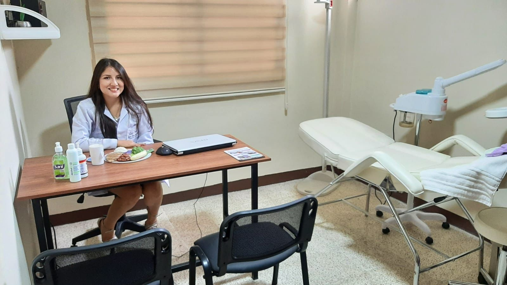
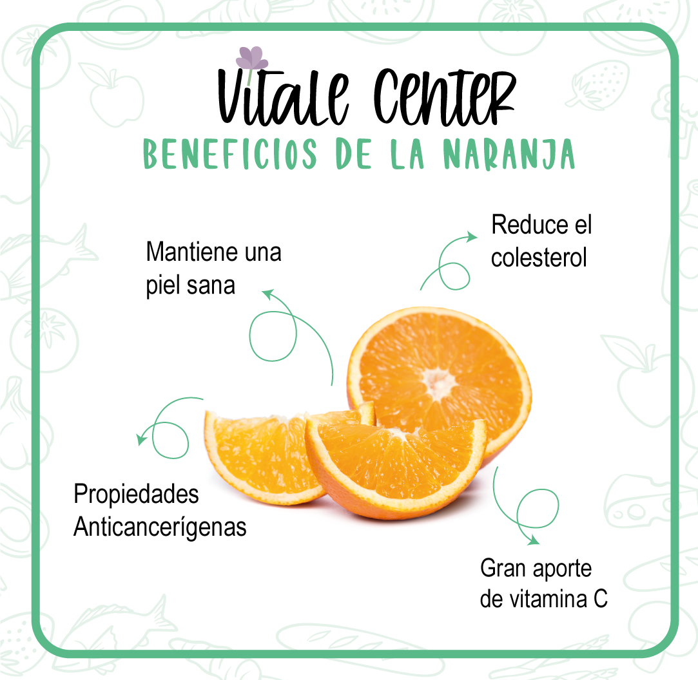
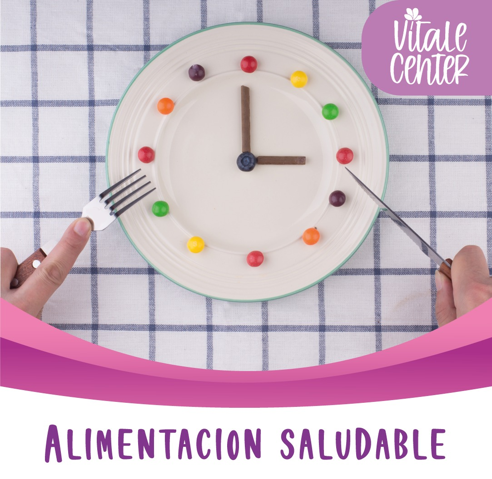
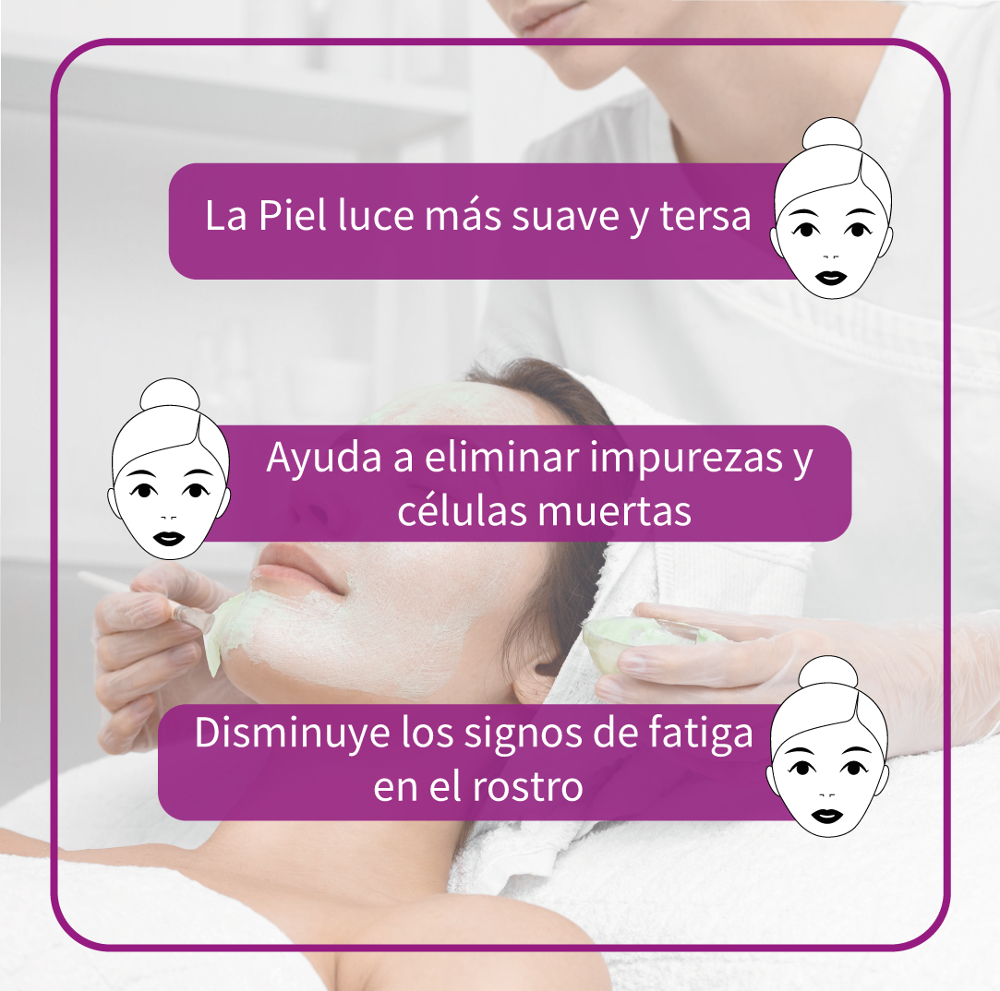
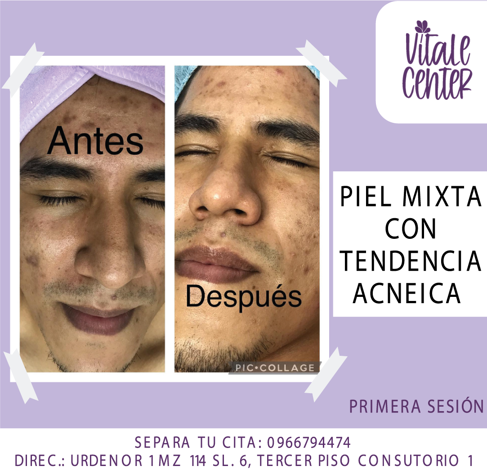
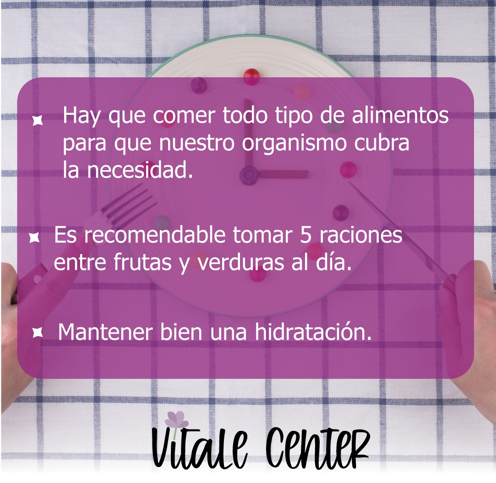
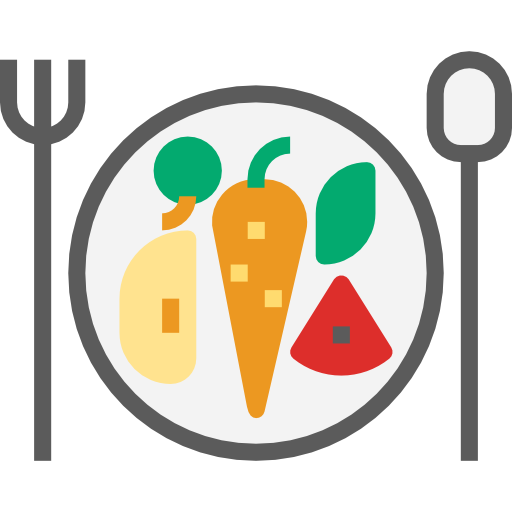

Nuestro Servicio

1Primer servicio
Consulta nutricional online o presencial. Incluye:
- Valoración clínica y dietética
- Análisis de composición corporal
- Diagnóstico nutricional
- Educación nutricional
- Recomendaciones personalizadas según el caso.
- Ejemplo de menú para un día.
2Segundo servicio
Consulta nutricional + ola alimentario para 30 días. Incluye:
- 1 Consulta nutricional ( videollamada o presencial)
- Análisis de composición corporal
- Diagnóstico nutricional
- Educación nutricional
- Plan alimentario 14 menús
- Consulta de seguimiento después de 15 días (online)
- Acceso a la aplicación móvil
- Ebook Guía alimentaria
3Tercer servicio
Limpieza facial
Las sesiones incluyen Higienización, extracción de impurezas, vapor de ozono, aplicación de alta frecuencia, aplicación de máscara led dependiendo del caso y masaje capilar con aceites esenciales de DOTERRA.
Los productos dependerán el tipo del piel del paciente. Y se entrega al paciente recomendaciones nutricionales dependiendo del tipo de piel de la persona.
Galeria





Expertos en:
